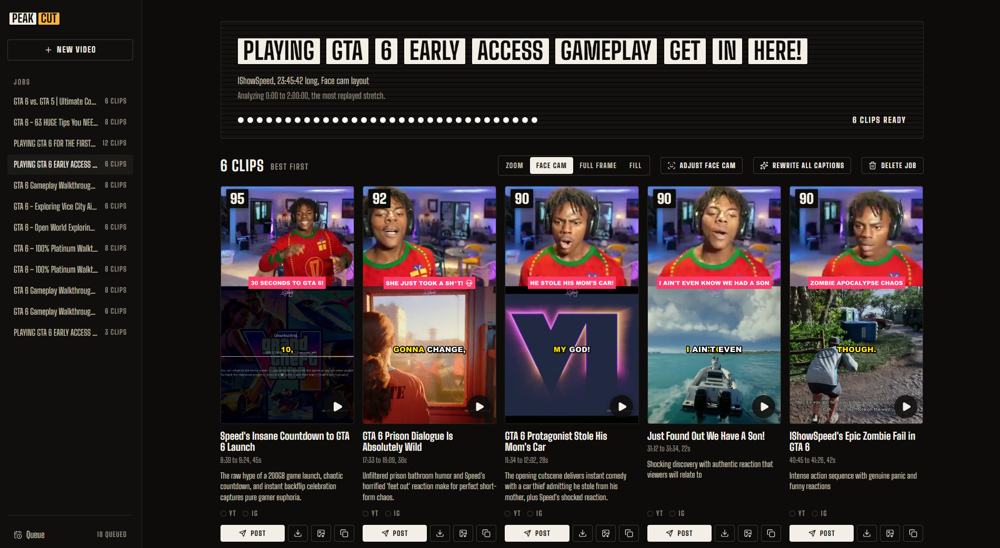

YouTube link in, clips out
PeakCut finds the best moments in a video or stream, cuts them into captioned 9:16 clips, and posts them to YouTube Shorts and Instagram Reels.

How it works
- Paste a linkA YouTube video or stream VOD.
- AI picks the momentsFrom the transcript, loudness peaks and the most replayed parts of the video.
- Clips are renderedVertical 9:16 video with animated captions and an optional face cam layout.
- You post themTo your own YouTube channel and Instagram account, with AI written captions and hashtags you can edit first.
Runs on your computer
PeakCut is free software that you install and run yourself, and its source code is public. There is no PeakCut account and no PeakCut server: your videos, clips and account connections stay on your own computer. It only posts the clips you choose, to the accounts you connect.
Read how it handles your data in the privacy policy, and the rules for using it in the terms. The source code is on GitHub.